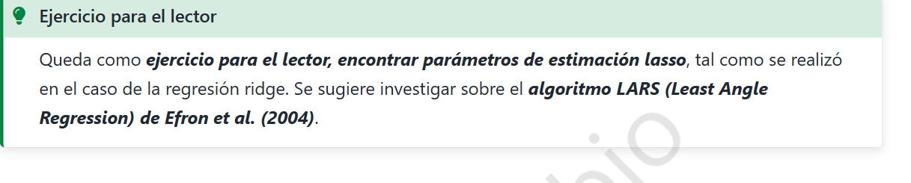
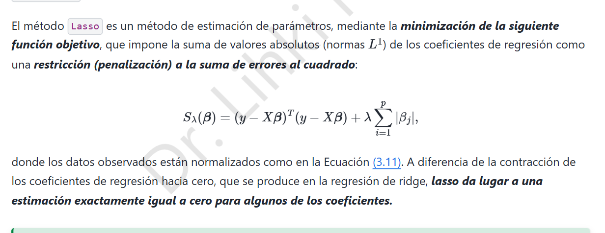

6. Regresión Lasso · Estimación y algoritmo LARS


6.1 Problema de optimización
El método Lasso utiliza la penalización \(\ell_1\) sobre los coeficientes:
La diferencia principal con Ridge es que \(|\beta_j|\) no es diferenciable en cero. Por tanto, hay que trabajar con subgradientes; no es válido derivar el valor absoluto como una función suave en todos los puntos.
6.2 Condiciones de optimalidad
El subgradiente de \(|t|\) es \(\partial|t|=\{1\}\) si \(t>0\), \(\{-1\}\) si \(t<0\) y \([-1,1]\) si \(t=0\). Como \(S_\lambda\) es convexa, \(\hat\beta_L\) minimiza globalmente cuando
Componente por componente,
La segunda condición explica por qué algunas variables pueden tener exactamente coeficiente cero: cuando su correlación absoluta con los residuos no supera el umbral \(\lambda/2\), se mantiene inactiva.
6.3 Solución explícita bajo ortogonalidad
Supongamos que los datos están centrados y \(X^TX=nI_p\). Para mínimos cuadrados ordinarios, \(\hat\beta_j^{MCO}=x_j^Ty/n\). Al desarrollar el cuadrado, ignorando constantes independientes de \(\beta\), el problema se separa en términos
Si \(b>0\), la derivada se anula en \(b=\hat\beta_j^{MCO}-\lambda/(2n)\), siempre que el resultado sea positivo. Si \(b<0\), se anula en \(b=\hat\beta_j^{MCO}+\lambda/(2n)\) si es negativo. Si \(|\hat\beta_j^{MCO}|\le\lambda/(2n)\), las condiciones de subgradiente se satisfacen con \(b=0\).
De los tres casos resulta la función de umbral suave:
Con Ridge en el mismo caso ortogonal, \(\hat\beta_j^R=\frac{n}{n+\lambda}\hat\beta_j^{MCO}\). Lasso desplaza y puede anular coeficientes; Ridge los contrae proporcionalmente sin anularlos por completo en general.
6.4 Caso general: descenso por coordenadas
Sin ortogonalidad no suele existir una fórmula cerrada simultánea para todos los \(\beta_j\). Se optimiza una coordenada a la vez. Definimos el residuo parcial \(r^{(j)}=y-\sum_{k\ne j}x_k\beta_k\). Si \(\|x_j\|^2=n\), se actualiza:
Se repite para \(j=1,\ldots,p\) hasta cumplir una tolerancia de convergencia. La convexidad justifica que el óptimo alcanzado satisfaga las condiciones globales.
6.5 Algoritmo LARS y trayectoria de Lasso
LARS (Least Angle Regression) construye una trayectoria de coeficientes al variar la penalización. En la versión Lasso, el procedimiento es:
- Partir de todos los coeficientes iguales a cero, con penalización grande.
- Identificar el predictor con mayor correlación absoluta con el residuo e incorporarlo al conjunto activo.
- Desplazar los coeficientes activos en una dirección equiangular hasta que entra otra variable o uno de los coeficientes activos llega a cero.
- Cuando un coeficiente cruza cero, la modificación de LARS para Lasso lo retira del conjunto activo.
- Continuar hasta obtener la penalización deseada.
La trayectoria es lineal a tramos mientras se mantengan el conjunto activo y los signos, ya que entonces
si la submatriz correspondiente es invertible. En situaciones de colinealidad exacta pueden existir soluciones no únicas y se requieren decisiones adicionales del algoritmo.
Conclusión: Ridge reduce varianza; Lasso también puede seleccionar variables. La norma \(\ell_1\) produce la posibilidad de coeficientes exactamente nulos.